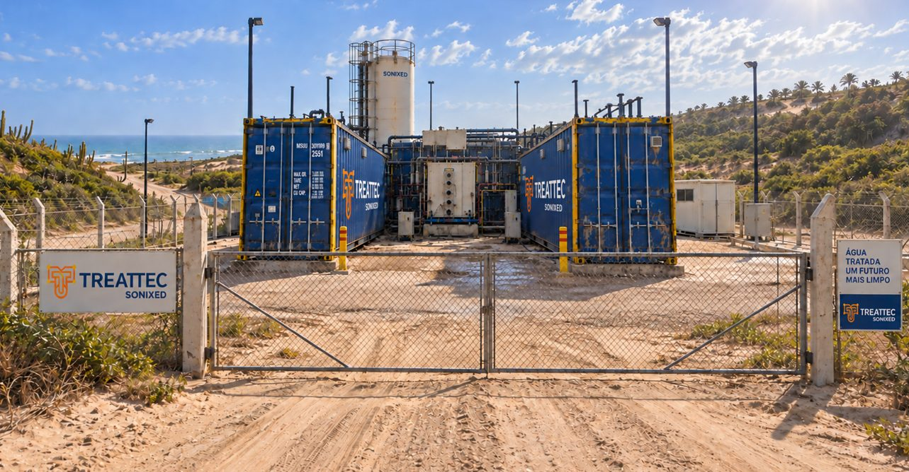
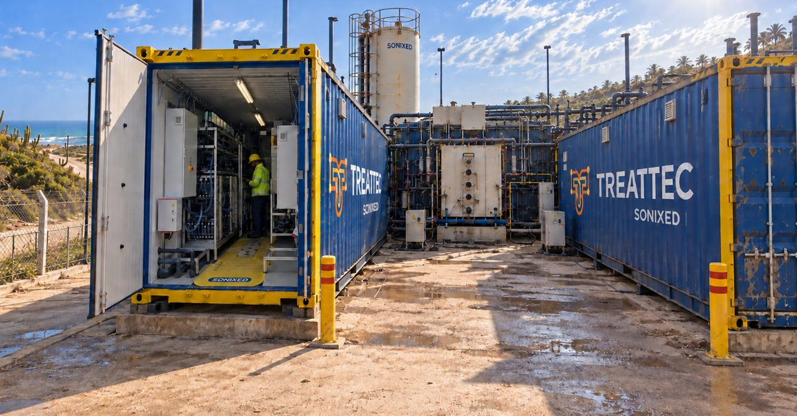
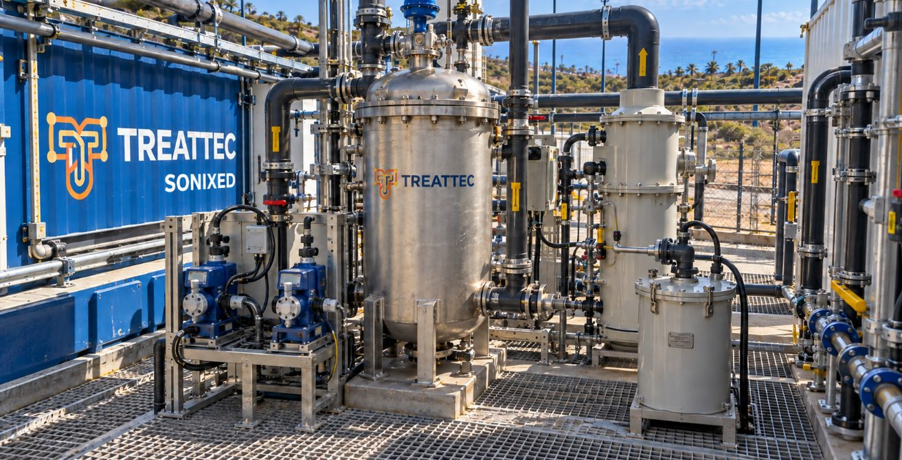
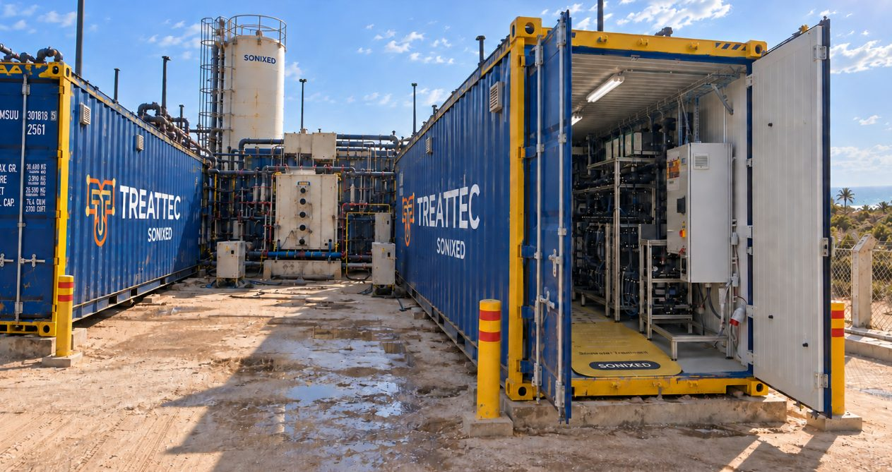

Unidade modular SONIXED instalada para tratar água subterrânea afetada por intrusão salina na região costeira do Ceará, transformando o desafio da salinidade em água tratada e em uma segunda linha de valor a partir da salmoura concentrada.
No litoral do Ceará, poços de água subterrânea usados para abastecimento vêm sendo progressivamente afetados pela intrusão de água do mar, elevando a salinidade a um nível que limita o uso convencional dessa água.
Em vez de tratar essa água como um problema a ser descartado, a Treattec projetou uma unidade que concentra a água diretamente por via eletroquímica e direciona a salmoura resultante para valorização — recuperando valor a partir da mesma salinidade que tornava a água de origem inutilizável.




A tecnologia SONIXED concentra a água de origem por via eletroquímica, sem depender de uma etapa prévia de osmose reversa. Todo o sistema é entregue em contêineres — o que permite instalar a unidade diretamente em campo, junto à fonte de água, com prazo de implantação menor do que uma planta convencional.
O vídeo abaixo apresenta a tecnologia central por trás da unidade. Para o processo completo de recuperação de minerais a partir da salmoura concentrada — incluindo o trem de precipitação, a separação salina e as metas de recuperação — veja o estudo de caso técnico.
Fale com a Treattec sobre tratamento de água e valorização de salmoura.